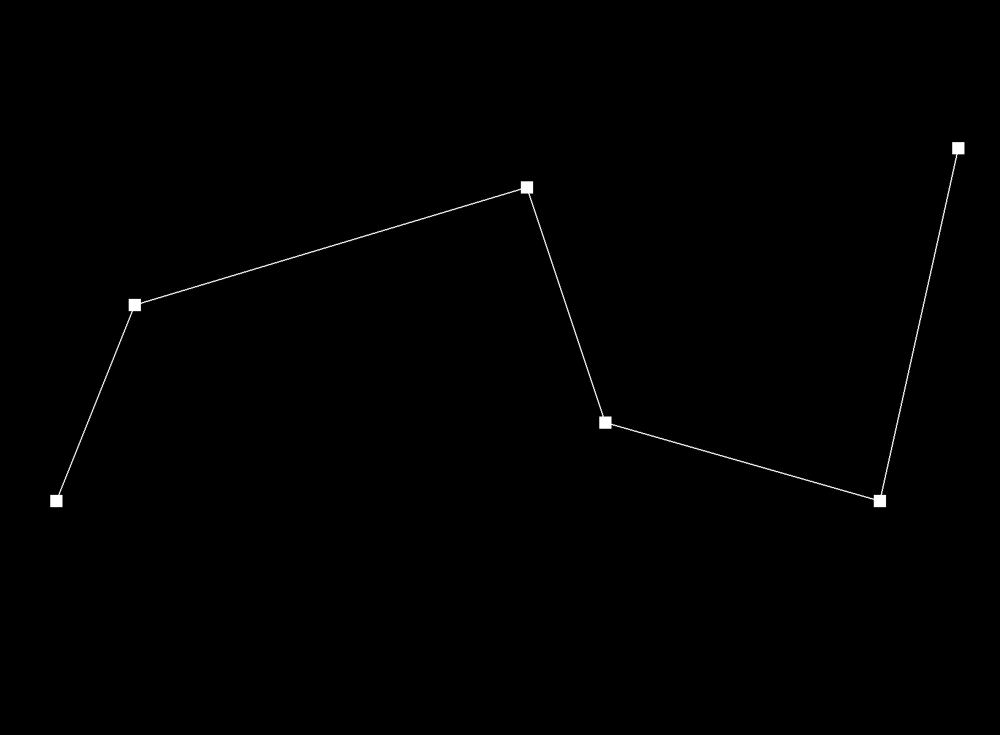
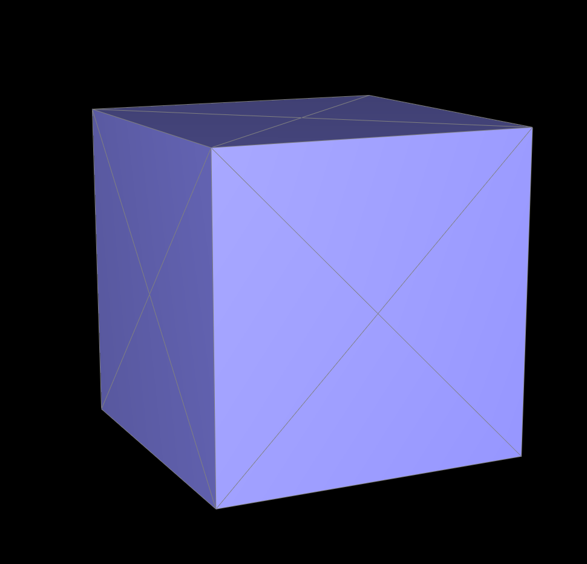

In this homework I implemented several great methods of interpolating and smoothing out rendered shapes, including the de Casteljau algorithm for Bezier curves and surfaces, and many mesh operations that utilize the half-edge data structure for triangle meshes: area-weighted vertex normals, edge flip, edge split, and loop subdivision for mesh upsampling. It builds upon the fundamendals of Homework 1 and adds support for more complex 3D shapes. One of the most interesting things I've learned was the significance of accurately calculating the position of a vertex in a mesh, because even a slightly perturbed position can lead to a very different rendered shape. This was especially true for meshes that have sharp edges, are asymmetrical, or have high degree vertices. Accurately dealing with these cases was essential to building a robust tool.
Section I: Bezier Curves and Surfaces
Part 1: Bezier curves with 1D de Casteljau subdivision
One of the best ways to fit Bezier curve onto any given set of control points is by using de Casteljau's algorithm. The algorithm performs linear interpolation on each consecutive pair of control points by first finding point(s) on the original edges according to the "weight" parameter t, which determines how much each point should contribute to the locations of the next level of intermediate control points. This is done by the proportion-based equation \((1-t)p_i+tp_{i+1}\). By applying this recursively, the algorithm can subdivide and simplify the original control point polygon, all the way until we reach a single point. This gives us enough information to construct a Bezier curve based on the original control points

Each level of evaluation from the original control points to the final Bezier curveBezier curve constructed from a slightly altered set of 6 control points
Part 2: Bezier surfaces with separable 1D de Casteljau
de Casteljau algorithm can easily extend to Bezier surfaces, as they can be broken down into many separable 1D Bezier curves. The same interpolation with a single parameter u is performed through all the individual 1D curves, and then the second parameter v is applied to the final points found from the 1D Bezier interpolations, sweeping out the surface covered by all the individual curves. Here I implemented it in three hierarchical functions: the one-level interpolation base case; a function that repeatedly calls the base case helper to evaluate each 1D curve (represented by rows in the list of control points); and finally a function that collects all the final points from each curve and does one final 1D interpolation on these points.
A very nice looking teapot generated by the de Casteljau algorithm expanded on Bezier surfaces
Section II: Triangle Meshes and Half-Edge Data Structure
Part 3: Area-weighted vertex normals
I implemented the area weighted vertex normals via a do-while loop that traverses through each halfedge that starts from the current vertex and finds pairs of neighbor vertices to calculate the area and the normal vector of their respective face. Similar to printNeighborPositions(...), the next halfedge extending outward from the current vertex can be found by finding the "next" of the current halfedge's twin. With these two halfedges we can apply ->next()->vertex to find the corresponding neighbor vertices. Subtracting the position vectors of these vertices by the position of the origin vertex would give us two vectors which we can apply cross product to find the normal. The area, then, is found by dividing the norm of this normal vector by 2. We would add the product of the unit normal vector and the area to the running summation. *(Here the normal vector is negated to flip its orientation and face outwards from the mesh)
We continue to traverse until we return to the halfedge we started with. By then we would have the sum of all area weighted vertex normals in faces that contain the starting vertex. This is normalized to find the desired value.
1 (left) Teapot shading without vertex normals2 (right) Teapot shading with Phong shading enabled
Part 4: Edge flip
I implemented edge flip by first gathering all the mesh elements (10 halfedges, 2 faces, 4 vertices, 5 edges) and then reassigning their respective pointers to complete the "rotation" of the triangles. Each of the halfedges are first found by traversing from the halfedge and its twin at the starting edge e0, and subsequently calling ->next() to cycle through the halfedges contained within the two faces. Calling ->twin() on non-starting edge halfedges allowed me to find the "outside" halfedges that don't belong to the faces. With these halfedges I could then find the remaining faces, vertices, and edges by calling the respective halfedges.
The real struggle was updating pointers to elements. For internal halfedges, most of their pointers have to be changed (except a few pointers to vertices, edges, and faces, because they remained the same). The setNeighbors function was used here to speed up the process, taking into account the "90 degrees rotation" of all inner halfedges. It was a similar process for outside halfedges, except they have lesser pointers to update because their ->next() and ->face() do not belong to the current triangle mesh. Once this is completed I assigned correct ->halfedge() pointers to faces, vertices, and edges. An interesting implementation here is that I consistently prioritized halfedges that are counterclockwise and come first in order. For example, when assigning a halfedge to vertex a, there was 3 options: h1, h3, and h7. I deterministically chose h1 under the rule I created. This has helped me debug a lot faster, and will hopefully make it easier for me to write subsequent parts of the assignment.
1 (left) Before edge flip2 (right) After edge flip
My debugging journey was very eventful to say the least, because I ended up finding bugs in both the process of fetching mesh elements and the reassigning of pointers. At first the teapot would produce huge, ugly holes after just 2-3 edge flips, and that was pretty alarming. I had to utilize the check_for functions to really start visualizing the connectivity of each element, and at one point I was so desperate I copied down the addresses of multiple halfedges and compared each of them with the other pointers displayed by the function. Turned out the whole mess was because I forgot that the outside halfedges do not point to any of the two faces. That's when I realized I should probably start implementing everything counterclockwise, and putting strict restrictions on the orientation of certain halfedges. That solved a huge portion of the problem.
Part 5: Edge split
With experience from the previous part, implementing edge split was much more straightforward. I implemented the operation again by first fetching all the required elements from the existing mesh, and this time also creating new elements: 6 new halfedges, 2 new faces, 1 new vertex, and 3 new edges. Then it was about reassigning pointers so that they fit the structure of the newly modified mesh. An interesting choice I made here was to break apart the halfedge twin pair that used to be on e0 and make them stay pointing outwards from their original vertices. This essentially ensures that the vertices on the two ends of the splitting edge can retain their halfedge pointers (as all halfedges pointing away from the vertices will not be modified under this setup). With this small design choice I was able to greatly decrease the number of pointers I needed to reassign after the split. New edges e5, e6, e7 are added to the interior, connecting to the new vertex e. The position of this new vertex was calculated using the midpoint formula, applied to vertices b, d that was originally sharing edge e0: (bpos + dpos) / 2.
1 (left) Default picture2 (middle) After edge split3 (right) After edge split and edge flip
Debugging for this part was much smoother compared to part 4. It mostly was about sticking to my own rule of assigning halfedges (i.e. prioritizing counterclockwise, smaller numbered halfedges) to make sure later on in part 6 I would have an easier time implementing the subdivision.
Part 6: Loop subdivision for mesh upsampling
The loop subdivison algorithm was implemented according to the recommended 5-step process, using a total of 5 loops to calculate updated positions of all vertices, complete edge splits and flips, and finally copying over the new positions of all vertices. The first loop calculates the new positions of existing vertices using the weighted formula (1 - nu) * old_position + u * sum_of_positions_of_neighbors, and the second loop calculates the new positions of the new vertices created by edge splits. These positions are temporarily saved in the newPosition variables of the mesh elements to prevent overwriting. The third loop then completes the edge splits over all edges. Based on the implementation in part 5, there are a total of 3 new edges created in the process, and one of those is the other half of the original edge split in two. With the function guaranteeing that the returned VertexIter points towards a halfedge that lies on the original edge, we can then easily traverse from this vertex to the two neighboring new edges and label them as new. This is essential in creating a filtering condition for the fourth loop to perform correct edge flips without accidentally counting a branch of the original edge as a new edge. The final loop copies over the new positions of all vertices, completing the process.
At the beginning I had the intention to combine step 1 and 2 into one loop over all faces, with the intention to then traverse through the vertices and edges of each face to calculate updated positions. This proved to be very difficult to implement, as it required more lines of code just to make sure vertices are not overidden in subsequent loops, and I ended up spending a lot of time debugging. Ultimately I scrapped the idea and went for a more conventional 5 step approach. A debugging trick that I found useful was to interact with the GUI and rountinely commenting out different parts of the code that modified the isNew variables of mesh elements. I got into the trouble of flipping too many unnecessary edges, and this method helped me visualize the effects each part of the algorithm had on the final mesh output.
The general effect of loop subdivision is smoothing out the mesh, but it also tends to shrink the overall shape due to the weighted averaging of vertex positions
Generally meshes become smoother with each iteration, whilst their overall shape shrinks ever so slightly due to the weighted averaging of vertex positions. I also noticed that sharp corners tend to round off and sharp edges gradually become more curved. This likely happens because the vertex update rule distributes weight from neighboring vertices, making the mesh appear more concave. Pre-splitting certain edges helped alleviate some of these effects, adding extra vertices to help retain the sharpness, as demonstrated in the figure below:
Here the upper left side of the ring preserves more clearly its sharpness from the original mesh before upsampling
The cube file is an interesting scenario where the loop subdivision algorithm successfully smooths out the mesh, but fails to subdivide symmetrically. This is because the default file has many single edges that cut across the cube's faces, which gives certain corner vertices higher degree. This means that when updating the positions of these vertices, we take in a larger sum of neighbor positions, and the vertices get displaced more drastically than others. To ensure cube.dae subdivides symmetrically (preserving its cubical shape), I preprocessed the mesh by splitting all the edges that cut across the cube's faces. This allows each corner vertex to be degree 6 and each face vertex to be degree 4, which eliminates the uneven distribution of connectivity. The result (shown below) is a mesh that is able to subdivide whilst retaining its cubical shape.

After redistributing the connectivity of the mesh, the loop subdivision algorithm is able to subdivide the cube symmetrically